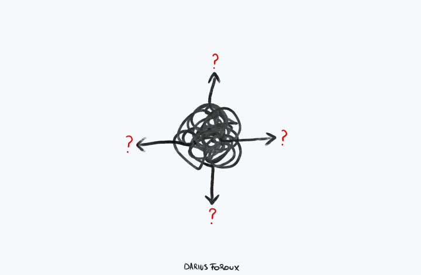

We fear the Known, not Uncertainty
So many of us think the source of fear is uncertainty. After all, there are so many unknowns in life.
But before you address your fear, you want to know why you have fear before you find a solution.
Most of us assume that uncertainty is the cause of fear. So what do we do? We try to remove uncertainty by...
• Getting every insurance policy possible
• Obtaining degrees we think can give us better jobs
• Working jobs that are supposed to look good on our resumes
• Networking with people we think we need to survive
What a waste of energy!
We are doing the wrong things while the answer is right in front of us. One of the most fascinating thinkers of the 20th century is Jiddu Krishnamurti. He didn’t subscribe to a particular philosophical movement, but his ideas were close to Buddhism.
Krishnamurti often said:
“One is never afraid of the unknown; one is afraid of the known coming to an end.”
How can you really fear something you don’t know? The problem is that we think we know. And that’s true. Because you can definitely be afraid of what you think you know.
Endings are Inevitable
Back in the early 70s, music artists made plenty of money through vinyl sales. It was followed by cassette tapes. Then the compact disks (CDs) came in and music sales peaked for a good 21 years. Record labels and artists earned a lot as their albums sold in the millions.
Then the internet changed everything: Music piracy, file-sharing sites, and later streaming platforms like Spotify or Apple Music made CDs, and the very concept of buying music almost obsolete. It was the end of an era.
Be free from Fear, embrace Endings
In our modern and connected world, we think we have the answers to everything. Remember when the Covid outbreak started? It was fascinating to see how many things no one knew at the time.
A simple question like, “How is the virus transmitted?” caused so much debate that everyone got confused. There was no single answer.
It’s the same when it comes to self-knowledge. We’re such complex beings that it’s impossible to fully know everything about ourselves.
One of the biggest sources of fear in the 21st century is what Krishnamurti called “the fear from the known.” We fear that the things we’re attached to will come to an end.
Why fear something you know will happen?
“I don’t want it to happen!”
No one wants it. But by understanding reality and where your fear comes from, you no longer will experience fear.
If you begin to understand what you are and what makes you afraid, you don’t need more courage because you will feel secure in the midst of decay. You will have true equilibrium.
Liberating, isn’t it?
There is no such thing as 'Closure'
Closure. What does that word even mean? The truth is, it will be different for everyone, because closure is such a broad term in and of itself. Closure can come in many forms: through the death of a relative, the loss of a friendship, etc.—but perhaps the most known one, is closure when it comes to relationships. For some, it may mean finally receiving an apology from an ex, giving your ex a glimpse of how much they hurt you, or finally getting validation for your pain. Whatever the case may be, it’s believed that getting closure will finally allow you to shut the door on the relationship and move on for good.
Here’s the thing, though, the cold, hard truth about closure: it doesn’t exist, and you will never get it with your ex. All of it is an illusion. The truth is, closure can only come from one person and one person only: you. Below I shatter the illsuion of closure and where the need for it comes from, and also break down how you can truly get closure for yourself.
Where the need for closure comes from:
• You feel the want and need to receive an apology. You may be feeling like getting the apology you think you deserve will allow you to finally move on because it will give you validate your pain and how much your ex hurt you.
• You’re having difficulty coming to terms with the breakup. If you’re having difficulty coming to terms with the breakup, you may have the desire to know why it didn’t work out, where it all went wrong, and if you could’ve done anything differently.
• Your ego is still bruised. This is a subconscious form of self-preservation. When your ego doesn’t get validated from a relationship and leaves you feeling bruised, that anger and resentment will come in and cloud your mind. You’ll end up feeling like you need to one-up, or find a way to get that validation and closure you never received.
How to get closure for yourself:
• Acknowledge your pain. All of your emotions are valid, and you don’t need someone else to validate them. Be compassionate with yourself and give yourself that acknowledgement. You don’t need another person to tell you that what you’re feeling is justified.
• Get comfortable never receiving an apology. The truth is, oftentimes, people can’t admit any wrongdoing; and you need to learn how to forgive them on your own. Years ago I saw a quote that said: “Forgive them. Not because they deserve it, but because you deserve peace.” This is the way to give yourself closure.
• Get comfortable in the unknown.It’s important that you find the strength within yourself to accept that there are some things you may never know about the time you spent with someone else.
Related Articles